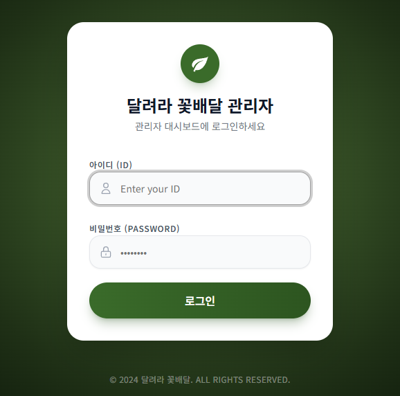
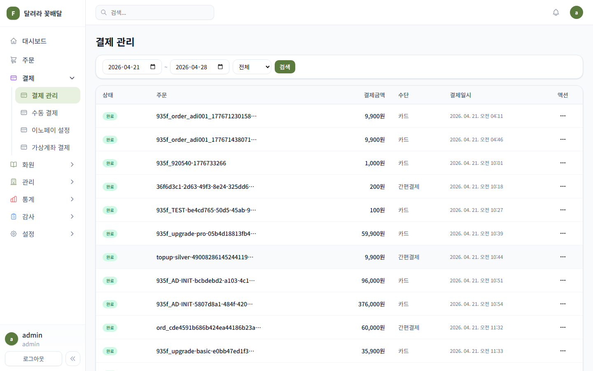
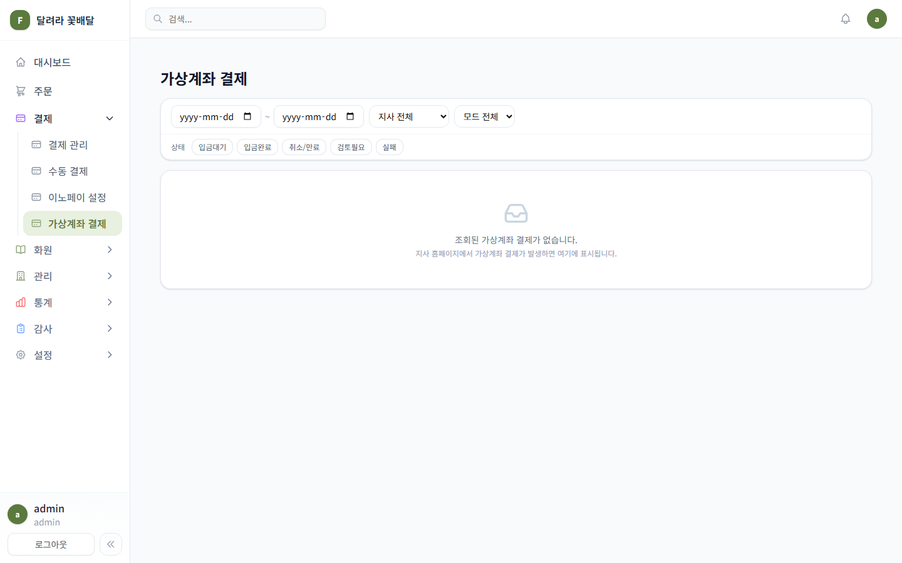
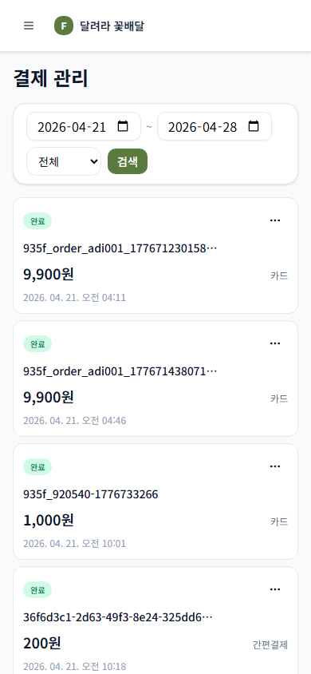

RunFlower Admin Design Brainstorm
TL;DR
현재 관리자 UI는 기능 범위가 넓고 기본 구조도 갖춰져 있지만, 운영자가 매일 반복해서 쓰는 화면 기준으로는 상태 우선순위와 다음 행동이 약하게 보입니다. 결제/가상계좌/화원/주문 화면은 단순 카드와 테이블을 넘어 운영 큐 + 상태 레일 + 저장된 뷰 + 우측 상세 패널 구조로 정리하는 것이 가장 효과적입니다.
Current State




Product Reading
RunFlower 관리자 앱은 일반 SaaS 대시보드보다 주문/결제/화원/정산을 놓치지 않는 운영 콘솔에 가깝습니다. 사용자는 새 정보를 감상하는 사람이 아니라 오늘 들어온 결제와 예외를 빠르게 확인하고 다음 조치를 취하는 운영자입니다.
강점
- 좌측 내비게이션의 큰 정보 구조는 운영 도메인별로 나뉘어 있습니다.
- 결제 관리 화면은 데스크톱 테이블과 모바일 카드의 분기 방향이 맞습니다.
- 결제 상태 칩, 날짜 필터, 가상계좌 탭처럼 업무에 필요한 기본 요소가 있습니다.
약점
- 무엇부터 처리할지 강하게 안내하지 않습니다.
- 결제 관리, 가상계좌 운영 로그, 이노페이 설정의 위험도 차이가 잘 드러나지 않습니다.
- 상단 검색창과 페이지별 필터가 분리되어 검색 범위가 애매합니다.
- 모바일 카드는 읽기용에 가깝고 빠른 처리 액션이 약합니다.
Cross-Pollinated Ideas
1. Linear Inbox Pattern: 결제/주문을 처리 큐로 재정의
Linear의 Inbox/Triage처럼 결제 실패, 입금대기, 검토필요, 신규 화원 등록을 이벤트 큐로 다룹니다. 목록 클릭 시 모달 대신 우측 상세 패널을 열고, 확인/보류/해결/다시 조회 같은 액션을 고정합니다.
2. Shopify Orders Pattern: 저장된 뷰와 업무별 필터
결제 관리 상단에 전체, 오늘 완료, 입금대기, 검토필요, 고액, 가상계좌 같은 저장된 뷰 탭을 둡니다. 날짜 입력은 기본 접어두고 필요한 경우 확장합니다.
3. Stripe Dashboard Pattern: 결제 운영 화면에 위험도와 리포팅 축 추가
결제 관리에 완료 금액, 입금대기, 검토필요, 취소/실패, 최근 갱신 요약 바를 추가합니다. 설정 화면에는 TEST/REAL, 마지막 변경자, 마지막 검증 시각, API 연결 상태를 첫 카드에 배치합니다.
4. Notion/Airtable Database Pattern: 컬럼 가시성과 상세 보기 제어
결제 관리에 표시 항목 메뉴를 추가하고, 기본 뷰는 상태, 주문/고객, 금액, 수단, 일시, 액션으로 줄입니다. 긴 orderId는 보조 정보로 내리고 상세에서 전체 값을 보여줍니다.
5. Dispatch Board Pattern: 화원/주문은 지역 레인 우선
주문 화면에 오늘 배송, 미배정, 배송 임박, 완료, 취소/문제 레인을 두고 화원 목록에는 지역, 추천, 활성, 사진 부족, 최근 주문 없음 같은 운영 필터를 저장된 뷰로 둡니다.
Concrete Screen Changes
Admin Shell
- 결제, 주문, 화원을 일일 운영 영역으로 묶고 설정/감사/백업은 하단 보조 영역으로 낮춥니다.
- 전역 검색 placeholder를 실제 범위 중심으로 바꿉니다: 주문번호, 고객명, 화원명 검색.
Payments
- 필터 카드를 테이블 툴바로 낮추고 저장된 뷰 탭을 먼저 보여줍니다.
- 테이블 첫 열은 상태 + 처리 이유를 함께 보여줍니다.
- 자주 쓰는 액션은 행에 직접 노출하고 드문 액션만 더보기 메뉴에 넣습니다.
VBank Operations
- 탭 위에 처리 필요, 입금대기, 계좌풀 잔량 요약 카드 3개만 둡니다.
- 상세는 우측 패널로 열고 원본 이벤트/결제/계좌 정보를 한 화면에서 추적합니다.
Mobile
- 결제 카드는 상태, 금액, 주문/고객, 일시, 수단, 주 액션 순서로 고정합니다.
- 날짜 필터는 오늘, 7일, 이번 달, 직접 선택 세그먼트를 우선합니다.
Suggested Priority
- 결제 관리의 저장된 뷰 + 상태 이유 + 우측 상세 패널
- 가상계좌 운영 로그의 처리 큐화
- 사이드바 정보 구조 정리
- 로그인/설정 화면의 운영툴 톤 조정
- 모바일 결제 카드 액션 강화